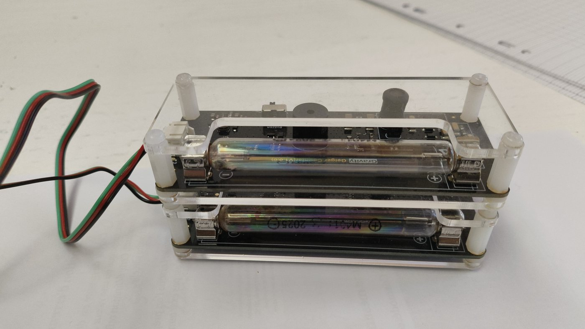
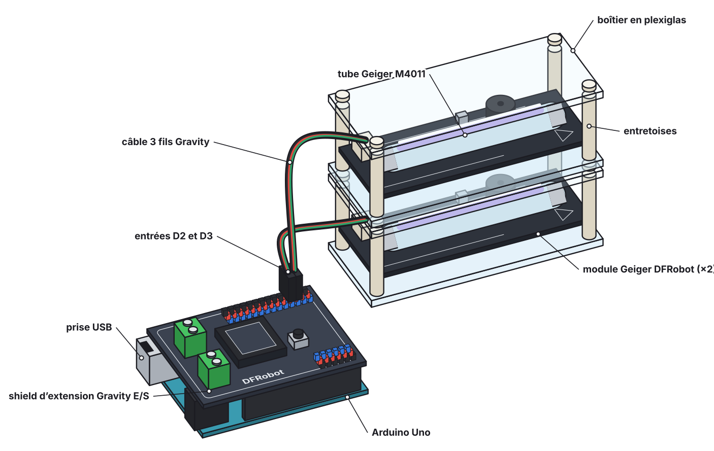
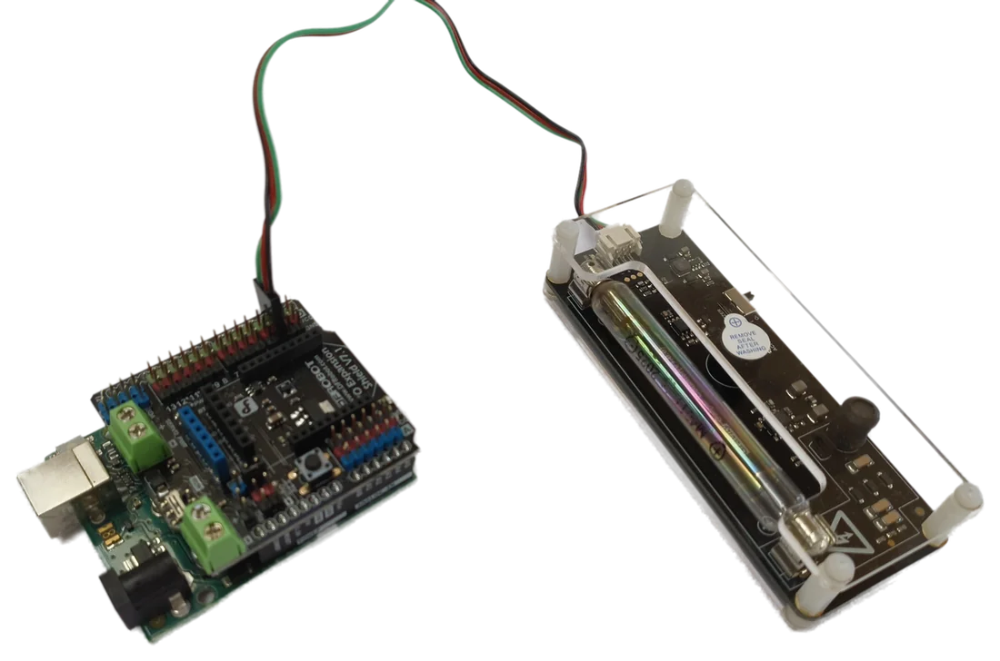
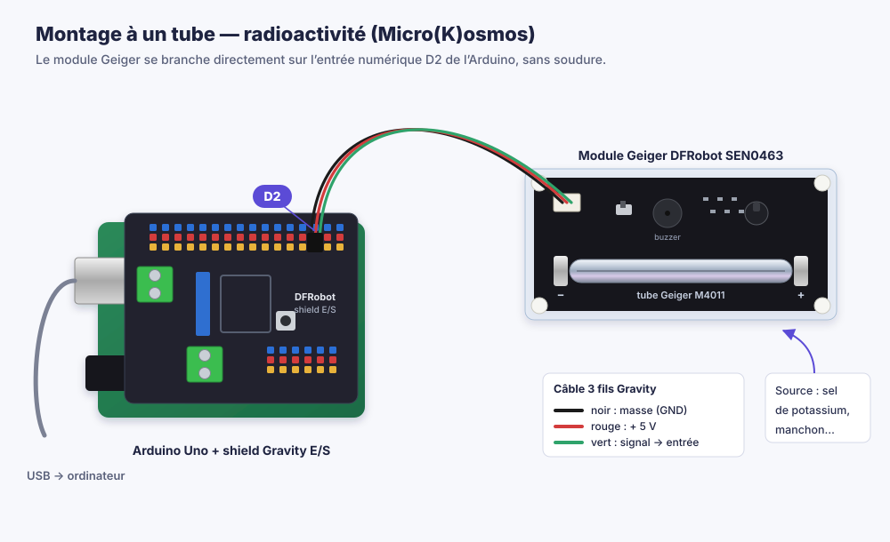
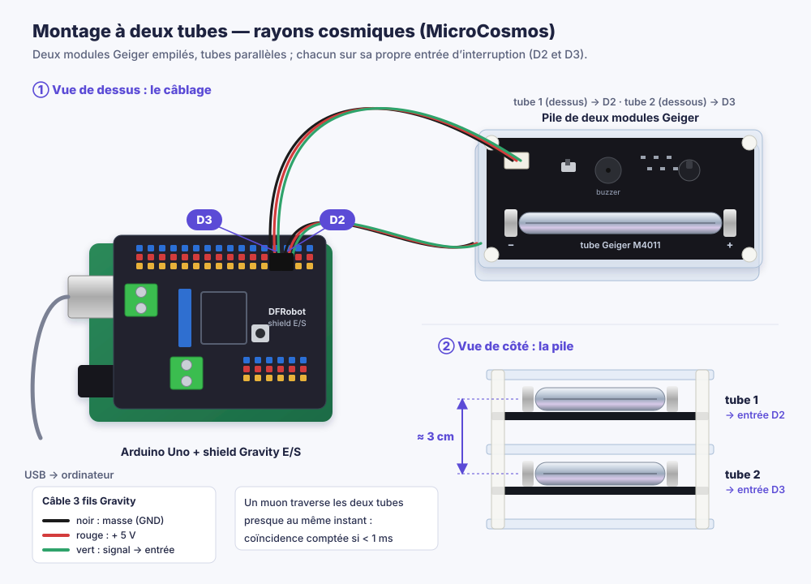
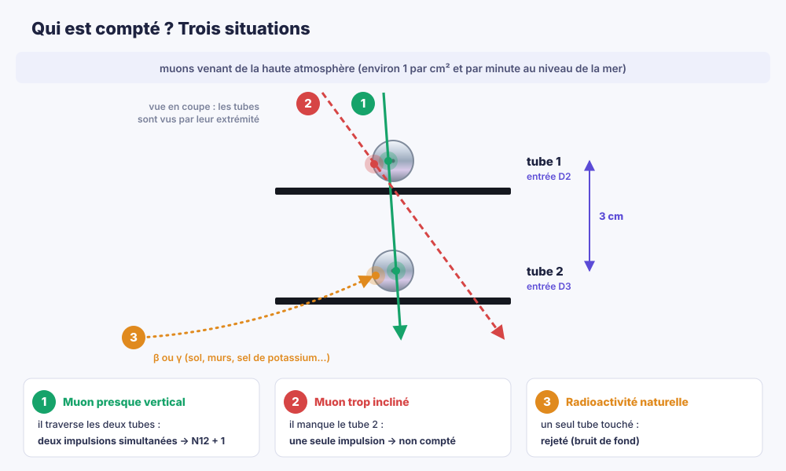
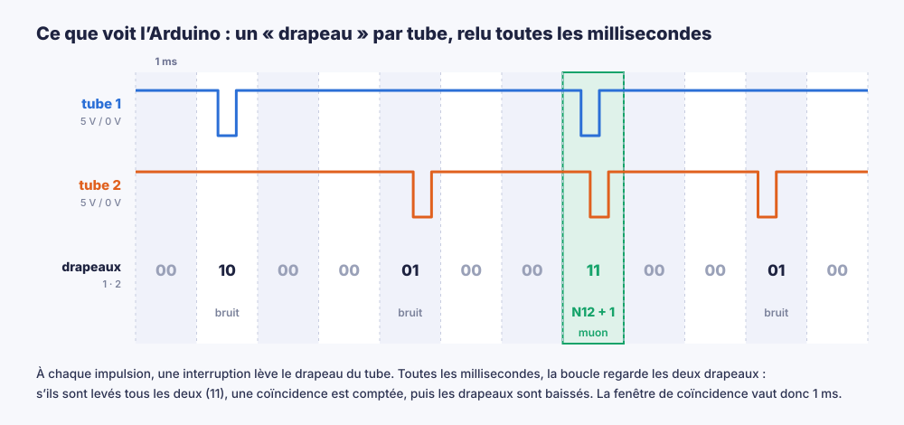
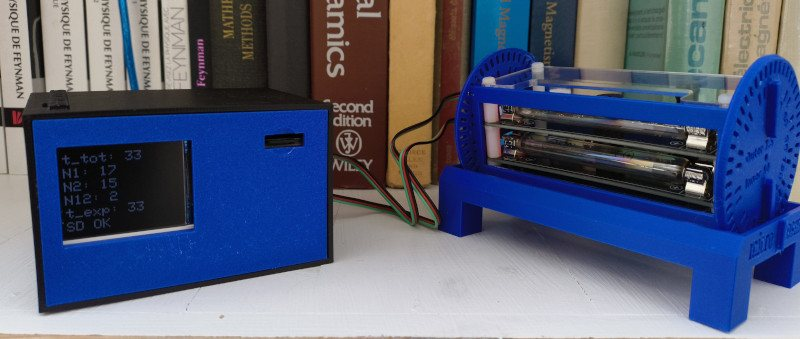
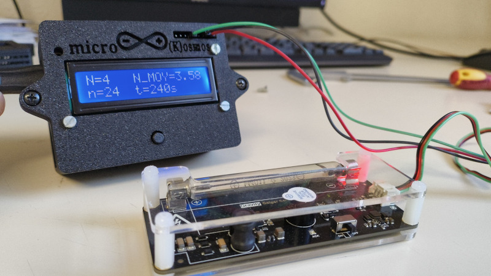

Le principe
Le cœur du détecteur est le module Geiger DFRobot Gravity (SEN0463). Il porte un tube M4011 (10 mm × 88 mm, environ 7 cm² de surface sensible), son alimentation haute tension et la mise en forme des impulsions. Quand une particule ionisante traverse le gaz du tube, elle déclenche une avalanche d’électrons : la sortie du module, au repos à 5 V, tombe à 0 V pendant environ 0,3 ms.
L’Arduino compte ces fronts descendants grâce à ses entrées d’interruption D2 et D3 : aucune électronique supplémentaire, aucune soudure. Un tube suffit pour la radioactivité ; deux tubes empilés, lus en coïncidence, sélectionnent les muons cosmiques.

Le matériel

| Qté | Élément | Rôle | Prix indicatif |
|---|---|---|---|
| 1 ou 2 | Module Geiger DFRobot Gravity (SEN0463) | tube M4011, haute tension et mise en forme intégrées | ≈ 70 € l’unité |
| 1 | Arduino Uno (ou compatible) | comptage des impulsions et des coïncidences | ≈ 25 € |
| 1 | Shield DFRobot Gravity E/S (V7) | connecteurs 3 fils enfichables | ≈ 10 € |
| 1 | Câble USB ; ordinateur, ou batterie USB et enregistreur micro-SD | alimentation et lecture des données | — |
| Total pour le montage à deux tubes | ≈ 150 à 175 € | ||
Sources pour la radioactivité : un sel de potassium du laboratoire de chimie (KCl, thiocyanate de potassium KSCN) ou un manchon de lampe à gaz. Voir la page Radioactivité.
Montage à un tube : la radioactivité

- Enficher le shield Gravity sur l’Arduino Uno.
- Brancher le câble 3 fils du module Geiger sur la broche D2 (noir sur GND, rouge sur 5 V, vert sur le signal).
- Téléverser
DetectionCosmiques3_0.ino(ouMicroCosmosRadioactivite.ino), puis lancer le logiciel Microcosmos, onglet Radioactivité.
Le programme compte les impulsions par tranches de 10 s : une série de 30 mesures dure 5 minutes, ce qui tient dans une séance de travaux pratiques.

Montage à deux tubes : les rayons cosmiques
- Empiler les deux modules sur leurs entretoises, tubes parallèles et écartés d’environ 3 cm.
- Brancher le tube du dessus sur D2 et celui du dessous sur D3 : ce sont les deux entrées d’interruption de l’Uno.
- Téléverser
DetectionCosmiques3_0.ino: chaque seconde, il envoie les comptages de chaque tube, les coïncidences N12 et le temps écoulé.


La coïncidence, au cœur du détecteur
Un tube Geiger seul réagit à toute particule ionisante : les rayonnements β et γ de la radioactivité naturelle (sol, murs, potassium de notre corps…) comme les rayons cosmiques, soit environ 0,4 à 0,5 coup par seconde. Impossible, avec un seul tube, de savoir ce qui vient du ciel.
Un muon au niveau de la mer, lui, se déplace presque à la vitesse de la lumière et traverse la matière sans presque être dévié : il déclenche les deux tubes empilés au même instant. Deux impulsions de bruit de fond sans rapport, en revanche, ne tombent presque jamais dans la même milliseconde. Ne compter que les coïncidences N12 sélectionne donc les muons. C’est l’expérience de Bothe et Kohlhörster (1929), où le circuit à lampes de Rossi est remplacé par quelques lignes de code.

La coïncidence logicielle
Chaque tube a sa propre routine d’interruption, qui incrémente son compteur et lève un drapeau. La boucle principale regarde les deux drapeaux toutes les millisecondes : s’ils sont levés tous les deux, une coïncidence est comptée, puis les deux drapeaux sont baissés. Cela revient à une fenêtre de coïncidence de 1 ms, la résolution du premier circuit de Rossi.
Les élèves peuvent lire ce code, modifier la fenêtre ou ajouter un troisième tube sur une carte disposant de plus d’entrées d’interruption.
volatile int Etat1, Etat2; // un drapeau par tube void GeigerISR1(){ Impulsion1++; Etat1 = 1; } // tube 1 void GeigerISR2(){ Impulsion2++; Etat2 = 1; } // tube 2 // dans setup() : broches 2 et 3, front descendant attachInterrupt(digitalPinToInterrupt(2), GeigerISR1, FALLING); attachInterrupt(digitalPinToInterrupt(3), GeigerISR2, FALLING); void loop(){ for (int t = 0; t < 1000; t++){ // bilan chaque seconde delay(1); // fenêtre de 1 ms if (Etat1 == 1 && Etat2 == 1) N12++; // un muon Etat1 = 0; Etat2 = 0; // on baisse les drapeaux } // ... envoi de Impulsion1, Impulsion2, N12, temps écoulé }

Et les coïncidences fortuites ?
Deux impulsions de bruit peuvent tomber par hasard dans la même milliseconde. Avec un taux R₁ et R₂ sur chaque tube et une fenêtre τ, on en attend R₁ × R₂ × τ par seconde. Pour R₁ ≈ R₂ ≈ 0,5 s⁻¹ et τ = 1 ms : 0,5 × 0,5 × 0,001 ≈ 2,5 × 10⁻⁴ s⁻¹, soit environ une par heure.
Pendant ce temps, la pile compte environ 70 vraies coïncidences par heure (1,2 par minute). Les fortuites représentent donc à peine 1 à 2 % du signal. Le logiciel Microcosmos affiche d’ailleurs ce nombre de fortuites attendues en direct.
Simulateur : voir la coïncidence en action
Le simulateur reproduit le détecteur avec des taux réalistes : environ 0,4 coup/s de bruit de fond par tube et des muons tirés selon une loi en cos²θ. Le temps est accéléré. Essayez d’agrandir la fenêtre de coïncidence : les fortuites (en jaune) deviennent vite plus nombreuses que les vrais muons (en vert).
Compte-t-il vraiment des muons ?
Une mesure de 4 h 18 min (15 482 s) a donné un taux stable de 0,0199 coïncidence par seconde. En divisant par la surface sensible (A = 7 cm²) et par l’acceptance géométrique de la pile (ε = 19,5 % pour des tubes écartés de 3 cm, calculée par un petit script Monte-Carlo) :
Φ = 0,0199 s⁻¹ / (0,195 × 7 × 10⁻⁴ m²) ≈ 146 muons m⁻² s⁻¹
C’est cohérent avec la valeur de référence au niveau de la mer (environ 170) et avec les 135 mesurés dans le même lycée avec un détecteur à scintillateur.
Les détecteurs autonomes
Sur batterie, avec un écran LCD et une carte micro-SD, le détecteur se passe d’ordinateur : on peut l’emmener en montagne, en avion, ou le laisser compter plusieurs jours.

Le MicroCosmos autonome
Un boîtier imprimé en 3D contient l’Arduino, un écran, un lecteur de carte SD et une batterie. Les deux tubes sont montés sur un support orientable gradué : on règle l’angle θ au zénith pour mesurer la distribution angulaire des muons.
L’écran affiche en direct :
t_tot: 33 N1: 17 N2: 15 N12: 2 t_exp: 33 SD OK
Durée totale, comptages de chaque tube, coïncidences, durée de l’expérience et état de la carte SD, où chaque mesure est enregistrée. Idéal pour des mesures en altitude, comme la comparaison entre Caen et l’Alpe d’Huez (voir l’expérience).

Le Micro(K)osmos autonome
Un seul tube Geiger relié à un Arduino logé dans un boîtier imprimé en 3D, avec un écran LCD de deux lignes et un bouton. Plus besoin d’ordinateur ni de moniteur série : les élèves lisent directement leurs mesures pour remplir le tableau.
L’écran affiche en direct :
N=4 N_MOY=3.58 n=24 t=240s
N : impulsions comptées pendant la dernière mesure de 10 s ; N_MOY : moyenne des mesures ; n : nombre de mesures ; t : durée écoulée. Ici, 24 mesures de 10 s en 240 s.